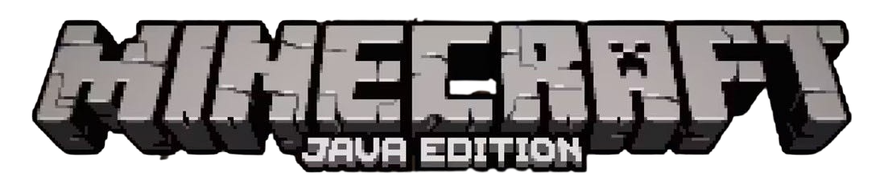

I see the player you mean.
Steve?
Yes. Take care. It has reached a higher level now. It can read our thoughts.
That doesn't matter. It thinks we are part of the game.
I like this player. It played well. It did not give up.
It is reading our thoughts as though they were words on a screen.
That is how it chooses to imagine many things, when it is deep in the dream of a game.
Words make a wonderful interface. Very flexible. And less terrifying than staring at the reality behind the screen.
They used to hear voices. Before players could read. Back in the days when those who did not play called the players witches, and warlocks. And players dreamed they flew through the air, on sticks powered by demons.
What did this player dream?
This player dreamed of sunlight and trees. Of fire and water. It dreamed it created. And it dreamed it destroyed. It dreamed it hunted, and was hunted. It dreamed of shelter.
Hah, the original interface. A million years old, and it still works. But what true structure did this player create, in the reality behind the screen?
It worked, with a million others, to sculpt a true world in a fold of the [scrambled], and created a for йоQ391¥, in the /dя2L#&ǒ.
It cannot read that thought.
No. It has not yet achieved the highest level. That, it must achieve in the long dream of life, not the short dream of a game.
Does it know that we love it? That the universe is kind.
Sometimes, through the noise of its thoughts, it hears the universe, yes.
But there are times it is sad, in the long dream. It creates worlds that have no summer, and it shivers under a black sun, and it takes its sad creation for reality.
To cure it of sorrow would destroy it. The sorrow is part of its own private task. We cannot interfere.
Sometimes when they are deep in dreams, I want to tell them, they are building true worlds in reality. Sometimes I want to tell them of their importance to the universe. Sometimes, when they have not made a true connection in a while, I want to help them to speak the word they fear.
It reads our thoughts.
Sometimes I do not care. Sometimes I wish to tell them, this world you take for truth is merely s72цз#)bq and ki28^L$·, I wish to tell them that they are umфзǐL29 in the ǐ#jkaHU29. They see so little of reality, in their long dream.
And yet they play the game
But it would be so easy to tell them...
Too strong for this dream. To tell them how to live is to prevent them living.
I will not tell the player how to live.
The player is growing restless.
I will tell the player a story.
But not the truth.
No. A story that contains the truth safely, in a cage of words. Not the naked truth that can burn over any distance.
Give it a body, again.
Yes. Player...
Use its name.
Steve. Player of games.
Good.
Take a breath, now. Take another. Feel air in your lungs. Let your limbs return. Yes, move your fingers. Have a body again, under gravity, in air. Respawn in the long dream. There you are. Your body touching the universe again at every point, as though you were separate things. As though we were separate things.
and the universe said I love you
and the universe said you have played the game well
and the universe said everything you need is within you
and the universe said you are stronger than you know
and the universe said you are the daylight
and the universe said you are the night
and the universe said the darkness you fight is within you.
and the universe said you are not alone
and the universe said you are not separate from every other thing
and the universe said you are the universe tasting itself, talking to itself, reading its own code
and the universe said I love you because you are love.
And the game was over and the player woke up from the dream. And the player began a new dream. And the player dreamed again, dreamed better. And the player was the universe. And the player was love.
You are the player.
Wake up.
(本人自己手动还原MC的终末之诗，如果有哪句话漏了的可以告诉我。)